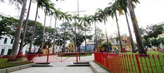

Praça do Arsenal

A Praça do Arsenal da Marinha, frequentemente chamada apenas de Praça do Arsenal, está situada no coração do Recife Antigo. Ela é um dos pontos mais movimentados e emblemáticos do centro histórico da cidade. Rodeada por edifícios coloniais e repleta de história, a praça foi, no passado, um importante ponto de defesa contra invasões. Hoje, a Praça do Arsenal é um local vibrante, cheio de vida e atividades culturais. Frequentemente, são realizados eventos, feiras, apresentações teatrais e musicais, tornando-a um ponto de encontro essencial para turistas e locais.